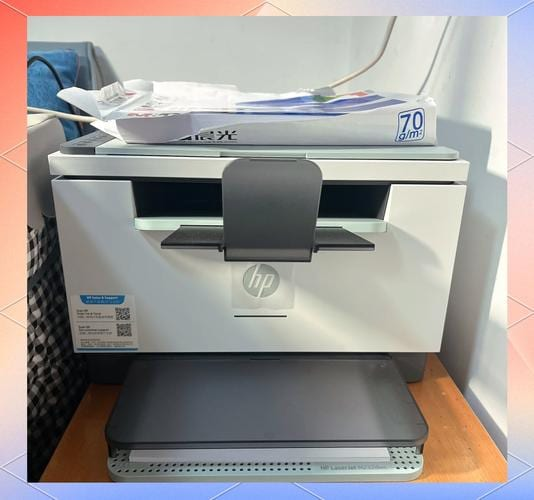

惠普 LaserJet MFP M232dwc

惠普紧凑型黑白激光多功能一体机，打印复印扫描加自动双面，约 29 页每分钟的输出速度应对家用与小型办公游刃有余，无线连接与手机打印方便省心，家用与小型办公两相宜。
客观评测
M232dwc 为黑白激光多功能一体机，标称打印速度约 29 页/分钟，分辨率 600×600 dpi，支持自动双面打印与双频 Wi-Fi 无线连接。实测文字输出锐利、首页出纸迅速，连续打印数十页稳定不卡纸，HP Smart App 配网与手机打印流程顺畅。身份证复印与扫描至 PDF 等日常功能齐全，机身紧凑适合桌面摆放。耗材采用惠普 137 系列硒鼓，属入门激光机型的常规配置。
主观点评
它解决的是最朴素的需求：孩子作业、合同文档、临时复印，随打随出不折腾。无线打印尤其好用，手机上点一下文件就出来了，不用开电脑。黑白文档的质感比喷墨干爽利落，双面打印也让文件显得正式。它不擅长照片和彩色，但作为家里的「文档机器」，安静快速，存在感很低——这正是一台打印机的美德。
优点与不足
- 打印速度快，文字锐利清晰
- 自动双面省纸，文档专业
- 无线打印与手机 App 体验成熟
- 仅黑白输出，彩色需求不适用
- 随机硒鼓容量偏小，后续耗材成本需留意
- 扫描速度一般，大批量扫描吃力
参数规格
| 类型 | 黑白激光多功能一体机（打印/复印/扫描） |
|---|---|
| 打印速度 | 约 29 页/分钟（A4 黑白） |
| 分辨率 | 600 × 600 dpi |
| 双面 | 自动双面打印 |
| 连接 | 双频 Wi-Fi、USB 2.0、以太网（依型号后缀） |
| 月负荷 | 月打印负荷约 20000 页（厂商标称） |
| 纸盒 | 进纸盒约 150 页，出纸约 100 页 |
| 耗材 | 惠普 137 系列硒鼓（约 1000 页起，大容量约 2000 页） |
| 功能 | HP Smart App 手机打印、身份证复印、扫描至 PDF |
| 功耗 | 打印约 380W，待机低功耗 |